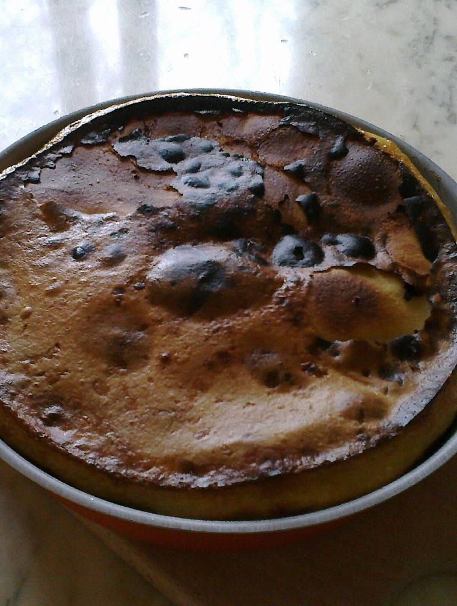

Desserts

Desserts
Far breton aux pruneaux
Préparation : 10 min
Cuisson : 50 min
Ingrédients (pour 6 personnes)
- 125 g de farine
- 80 g de sucre
- 4 œufs
- 75 cl de lait entier
- 225 g de pruneaux dénoyautés
- 30 g de beurre demi-sel
- 1 pincée de sel
- rhum ou vanille (facultatif)
Quantités adaptées. Les temps de cuisson ne sont pas recalculés.
- Préchauffer le four à 180 °C, chaleur tournante.
- Fouetter œufs et sucre, ajouter farine et sel, puis le lait peu à peu et le parfum.
- Beurrer généreusement le plat, y disposer les pruneaux, verser la pâte.
- Cuire 45 à 50 minutes : bien doré, encore un peu tremblotant au centre.
D’après Tourisme Bretagne. Texte reformulé.